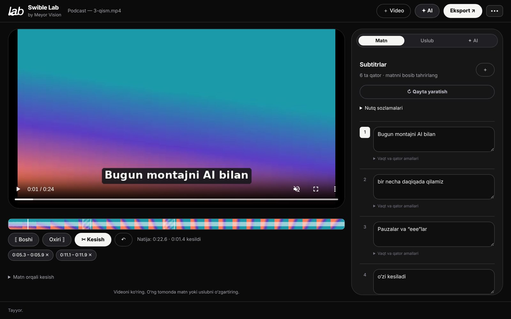

← Bosh sahifa
 Adobe’siz oddiy muharrir
Adobe’siz oddiy muharrir
Adobe’siz oddiy muharrirSwible Lab
Videoni oching — subtitr, kesish, reels, dublyaj va toza ovoz bilan MP4. Bir oynada.
Hustler orqali bir tugmada o‘rnatiladi
Yuklab olishWindows · macOS
Boshqa tizim: Windows · Mac (Apple Silicon) · Mac (Intel)
Ogohlantirishsiz o‘rnatish (tavsiya)
Windows: PowerShell’ni oching va joylang
irm https://azizbek-dsgn.github.io/Meyor-Releases/install.ps1 | iexMac: Terminal’ni oching va joylang
curl -fsSL https://azizbek-dsgn.github.io/Meyor-Releases/install.sh | bashFaylni o‘zi yuklaydi, rasmiy SHA-256 bilan tekshiradi, o‘rnatadi va ochadi — brauzer va tizim ogohlantirishlarisiz.
Hustler · bepul · O‘rnatish qo‘llanmasi (rasmlar bilan) →

Bir tugmali zanjir
“Tozala → MP4”: subtitr, pauza va “eee”lar kesiladi, ovoz tozalanadi.
Matn orqali kesish
So‘zni belgilang — videodan ham kesiladi.
Reels
Belgilangan joy yoki AI tanlagan lahzalar — vertikal MP4.
Dublyaj
Inglizcha yoki ruscha: tarjimani AI’ingiz qiladi, ovozni kompyuter o‘qiydi.
Waveform va kadrlar
Kesish paneli ostida ovoz va kadrlar lentasi.
Asl fayl o‘zgarmaydi
Video nusxalanmaydi — Premiere kabi bog‘lanadi.